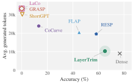

Slimming a relay team for a marathon: you don't drop runners, and you don't blindfold anyone at the baton handoff. Instead, on the stretches where runners barely change pace, you give them lighter packs. The baton keeps moving all the way to the finish.
마라톤 계주팀을 가볍게 만든다고 해 보자. 주자를 빼지 않고, 바통을 넘기는 순간에 누구의 눈도 가리지 않는다. 대신 속도가 거의 변하지 않는 구간의 주자에게 가벼운 배낭을 준다. 그러면 바통은 결승선까지 계속 이어진다.
How it works: five stages, forward passes only작동 방식은 순전파만 쓰는 다섯 단계
Every statistic comes from the dense model reading its own reasoning traces. The output is a smaller dense checkpoint, so no sparse kernels are needed.
모든 통계는 원래 모델이 자기 추론 기록을 읽으면서 얻는다. 결과물은 더 작은 밀집 체크포인트라 희소 커널이 필요 없다.

- Calibrate on traces.추론 기록으로 보정.24 AIME 2024 traces from the dense model, using each prompt and the first 2K generated tokens.원래 모델이 만든 AIME 2024 추론 기록 24개에서 프롬프트와 생성 토큰 앞 2K개를 쓴다.
- Pick layers by influence.영향으로 층 고르기.Block Influence is 1 minus the cosine between a block's input and output; a budget of N layers trims the 2N lowest.블록 영향도는 1에서 블록 입력과 출력의 코사인을 뺀 값이다. N층 분량 예산이면 영향도가 가장 낮은 2N개 층을 깎는다.
- Keep the strongest features.강한 특징만 남기기.Each feature scores mean squared activation times its down-projection norm squared; the rest are deleted from all three projections.특징마다 활성값 제곱의 평균에 down 투영 열 노름의 제곱을 곱해 점수를 매기고, 나머지는 세 투영에서 모두 지운다.
Key point: leave attention alone핵심은 어텐션을 건드리지 않는 것
At the same parameter cut, pruning attention alone takes accuracy to nearly zero, while MLP-only trimming keeps most of it. MLP-trimmed models also overlap most with the dense model's attention, even on tokens 16K–32K back.
같은 양을 잘라도 어텐션만 자르면 정확도가 거의 0이 되고, MLP만 깎으면 대부분 남는다. MLP만 깎은 모델은 16K~32K 토큰 앞을 보는 어텐션에서도 원래 모델과 가장 많이 겹친다.
Results: right answers with shorter traces결과는 더 짧은 추론으로 맞히기
Broken pruning shows up as rambling before wrong answers. On Qwen3-14B the other pruned models write roughly twice as many tokens, and on Phi-4 LayerTrim hits the token limit on 24.4% of GPQA answers vs 70.2% for FLAP.
망가진 가지치기는 오답보다 장황함으로 먼저 드러난다. Qwen3-14B에서 다른 가지치기 모델은 토큰을 대략 두 배 쓰고, Phi-4에서 GPQA 답이 토큰 한도에 걸리는 비율은 LayerTrim 24.4%, FLAP 70.2%다.

| Model | Dense | ShortGPT | RESP | LayerTrim |
|---|---|---|---|---|
| Qwen3-14B | 76.7 | 0.4 | 58.3 | 65.1 |
| Phi-4-reasoning+ | 71.0 | 1.8 | 34.6 | 48.9 |
| Magistral-Small | 70.3 | 0.0 | 24.3 | 45.7 |
When compressing a reasoning model, protect attention, which carries retrieval over the long trace, and take width from layers that barely change the hidden state. Watch generation length and token-limit hits, because a damaged reasoner starts looping before it starts failing.추론 모델을 압축할 때는 긴 추론 기록에서 정보를 찾아오는 어텐션을 지키고, 은닉 상태를 거의 바꾸지 않는 층에서 폭을 덜어내자. 생성 길이와 토큰 한도 도달 비율도 지켜보자. 망가진 추론 모델은 틀리기 전에 먼저 맴돌기 시작한다.
Even the best case keeps only 65–85% of dense accuracy at 9 of 40 layers for about 1.2× speed, and there is no comparison with quantization at equal memory. AIME scores rest on 30 problems per year with seed spread up to 10 points, and calibration uses just 24 traces.가장 좋은 경우도 40층 중 9층 분량을 자르면 원래 정확도의 65~85%만 남고 속도는 약 1.2배다. 같은 메모리에서 양자화와 비교하지 않았다. AIME 점수는 연도별 30문제에 기대며 시드 간 편차가 최대 10점이고, 보정에는 기록 24개만 쓴다.